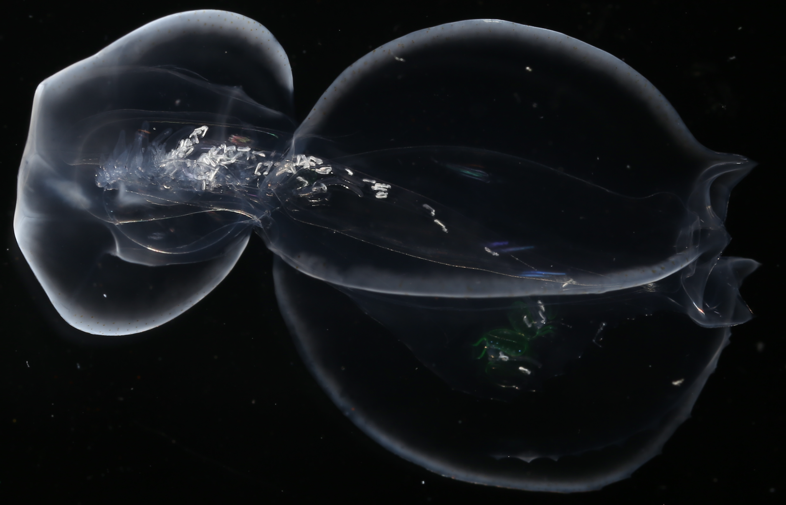

Publications
Photo credit: Alejandro Damian-Serrano
Church, S. H., Abedon, R. B., Ahuja, N., Anthony, C. J., Destanović, D., Ramirez, D. A., Rojas, L. M., Albinsson, M. E., Álvarez Trasobares, I., Bergemann, R. E., Bogdanovic, O., Burdick, D. R., Cunha, T. J., Damian-Serrano, A. … & Dunn, C. W. (2025). "Population genomics of a sailing siphonophore reveals genetic structure in the open ocean." Current Biology, https://doi.org/10.1016/j.cub.2025.05.066
Damian-Serrano, A., Walton, K.A., Bishop-Perdue, A., Bagoye, S, Du Clos, K. T., Gemmell, B. J., Colin, S. P., Costello, J.H., Sutherland, K.R. (2025) "Colonial architecture modulates the speed and efficiency of multi-Jet swimming in salp colonies". Journal of Experimental Biology https://doi.org/10.1242/jeb.249465
Sutherland, K. R., Damian-Serrano, A., Du Clos, K. T., Gemmell, B. J., Colin, S. P., & Costello, J. H. (2024). Spinning and corkscrewing of oceanic macroplankton revealed through in situ imaging. Science Advances 10(20), https://doi.org/10.1126/sciadv.adm9511
Damian-Serrano, A., & Sutherland, K. R. (2024) "A developmental ontology for the colonial architecture of salps" Biol. Bull. https://www.journals.uchicago.edu/doi/epdf/10.1086/730459
Hetherington, E. D., Close, H. G., Haddock, S. H. D., Damian-Serrano, A., Dunn, C. W., Wallsgrove, N. J., Doherty, S. C., & Choy, C. A. (2024) "Vertical trophic structure and niche partitioning of gelatinous predators in a pelagic food web: Insights from stable isotopes of siphonophores." Limnology and Oceanography https://doi.org/10.1002/lno.12536
Damian-Serrano A. (2024) "Yellow tails in Iasis cylindrica (Salpida: Salpidae) chains suggest zooid-type subspecialization in salp colonies" Ecology — The Scientific Naturalist https://doi.org/10.1002/ecy.4243.
Damian-Serrano A., Hughes, M., Sutherland, K.R. (2023) "A new molecular phylogeny of salps (Tunicata: Thalicea: Salpida) and the evolutionary history of their colonial architecture." Integrative Organismal Biology, obad037.
Damian-Serrano A., Hetherington E.D., Choy CA, Haddock S.H.D., Lapides A., Dunn C.W. (2022) "Characterizing the secret diets of siphonophores (Cnidaria: Hydrozoa) using DNA metabarcoding" PLoS ONE 17(5): e0267761. https://doi.org/10.1371/journal.pone.0267761
Abraham, J.O., Upham, N.S., Damian-Serrano, A., Jesmer, B.R. (2022) "Evolutionary causes and consequences of ungulate migration" Nature Ecology & Evolution https://doi.org/10.1038/s41559-022-01749-4
Hetherington, E.D., Damian-Ser